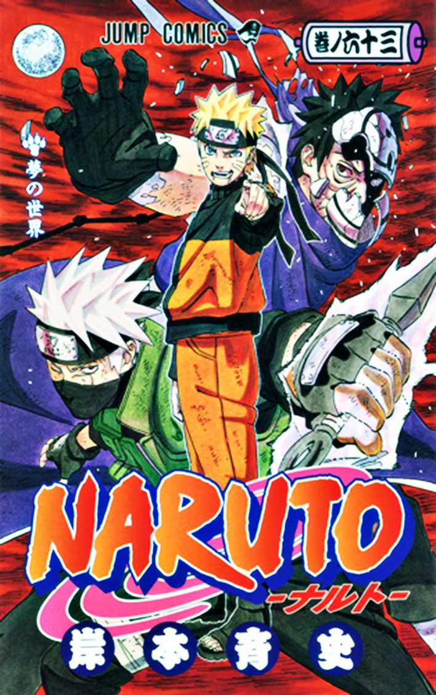
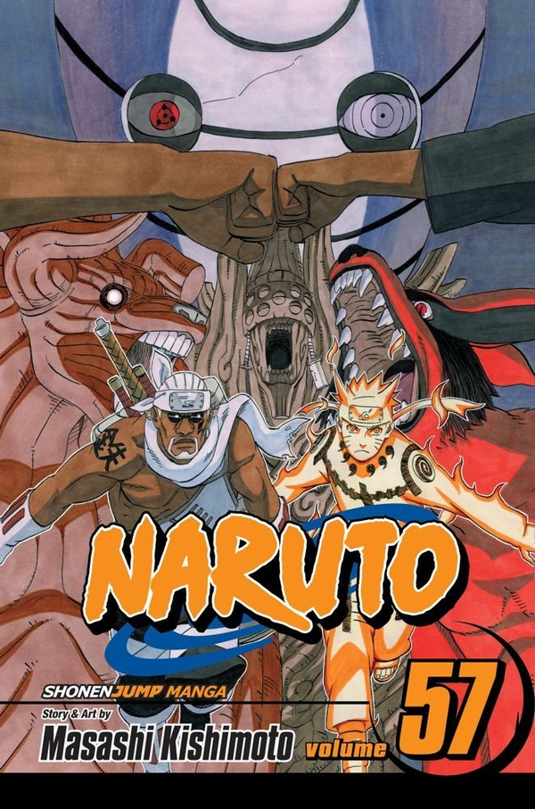
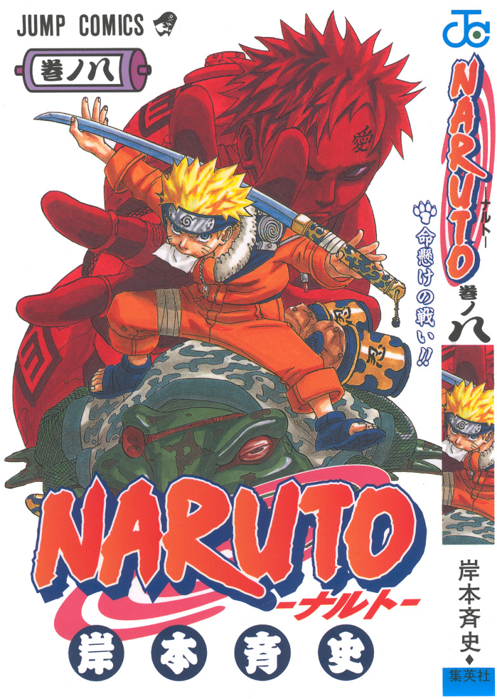

Story Plot

Twelve years before the start of the series, a powerful creature known as the Nine-tailed Demon Fox attacked the ninja village Konoha, killing many people. In response, the leader of Konoha– the Fourth Hokage– sacrificed his life to seal the demon inside the newborn Naruto Uzumaki. Konoha, however, regarded Naruto as if he were the demon fox itself and mistreated him throughout most of his childhood. A decree made by the current Kage, the Third Hokage, forbade anyone mention the attack of the demon fox to anyone else. This included Naruto, who was not aware of the demon inside of him. Years later, Naruto is tricked by the renegade ninja Mizuki into stealing a forbidden scroll that would teach him a secret ninja technique, but he is stopped by his teacher, Iruka Umino. When Iruka almost dies while protecting Naruto from Mizuki, who also reveals that he is the container of the Nine-Tailed Fox, Naruto uses the Jutsu he learned from the scroll that creates multiple clones of himself, Shadow Clone Technique, to defeat Mizuki.
Naruto is assigned alongside Sasuke Uchiha, whom he often competes against, and Sakura Haruno, whom he has a crush on, to form a three-person team named Team 7 under an experienced and severe sensei, the elite ninja Kakashi Hatake. Like all the ninja teams from every village, Team 7 is charged with completing missions requested by villagers, such as doing chores or being bodyguards. After several missions, most notably their mission to Wave Country as Tazuna the bridge builder's guards, Kakashi allows Team 7 to participate in a ninja exam in which they can advance to a higher rank, and thus, take part in more difficult missions. During the exams, Orochimaru, a criminal at the top of Konoha's most wanted list, attacks Konoha and kills the Third Hokage in an act of revenge. This forces one of the three legendary ninja, Jiraiya, to search for his former teammate Tsunade, who has been nominated to become the Fifth Hokage. During the search, it is revealed that Orochimaru desires to acquire Sasuke due to his powerful genetic heritage, the Sharingan. Believing Orochimaru will be able to give him the strength needed to kill his brother Itachi, who destroyed his clan, Sasuke eventually joins him after a humiliating defeat at his brother's hands. Tsunade sends a group of ninja including Naruto to make Sasuke return to Konoha, but Naruto is unable to defeat him and bring him back to the village. Naruto does not give up on Sasuke, however, and he leaves Konoha to train for two and a half years under Jiraiya's tutelage in order to prepare himself for the next time he encounters Sasuke.
After the training period, a criminal organization called Akatsuki attempts to capture the nine powerful tailed beasts that are sealed within people—including the Nine-Tailed Demon Fox sealed inside of Naruto. Several ninjas from Konoha, including Team 7, fight against the Akatsuki members and search for their teammate Sasuke. Although they manage to save Gaara, the host of the One-Tailed beast, Akatsuki is successful in capturing the other seven creatures whose hosts die in the process. In the meantime, Sasuke betrays Orochimaru and faces Itachi to take revenge. After Itachi dies in battle, Sasuke is told by the Akatsuki founder and leader Tobi that Itachi was ordered by Konoha's leadership to destroy his clan. Saddened with this revelation, Sasuke joins forces with Akatsuki to kill Konoha's superiors who orchestrated the Uchihas' elimination.
Meanwhile, as several Akatsuki members are defeated by the Konoha ninjas, their figurehead leader, Pain, invades the village to capture Naruto. However, Naruto defeats him and convinces him to abandon the Akatsuki. With Pain's eventual death, Tobi-disguised as one of Konoha's founding fathers Madara Uchiha-announces that he wants to obtain all nine of the tailed beasts in order to perform an illusion powerful enough to control all of humanity. The leaders of the five ninja villages refuse to aid him, and instead, join forces to confront him and his allies. This results into a fourth ninja world war between the unified armies of the Five Great Countries collectively known as the "Ninja Alliance Army" and Akatsuki's forces. During the conflict, it is revealed that Tobi is actually Obito Uchiha, Kakashi's former teammate who was supposed to be dead, but he was saved by the real Madara Uchiha and has been working under him ever since.
Back to top
Production

Masashi Kishimoto first created a one-shot of Naruto for August 1997 issue of Akamaru Jump. Despite its high positive results in the reader poll, Kishimoto thought "[the] art stinks and the story's a mess!" Kishimoto was originally working on Karakuri for the Hop Step Award when, unsatisfied by the rough drafts, he decided to work on something different, which later formed into the manga series Naruto. Kishimoto has expressed concerns that the use of chakras and hand signs makes Naruto too Japanese, but still believes it to be an enjoyable read. When asked about what was Naruto's main theme during Part I, Kishimoto answered that it is how people accept each other citing Naruto's development across the series. Kishimoto said that since he was unable to focus on romance during Part I, he was to emphasize it more in Part II, the part of the manga beginning with volume 28, despite finding it difficult.
When originally creating the Naruto story, Kishimoto looked to other shonen manga as influences for his work, although he attempted to make his characters as unique as possible. He based it off of Japanese culture The separation of the characters into different teams was intended to give each group a specific flavor. Kishimoto wished for each member to be "extreme," having a high amount of aptitude in one given attribute yet be talentless in another." The insertion of villains into the story was largely to have them act as a counterpoint to the characters' moral values. Kishimoto has admitted that this focus on illustrating the difference in values is central to his creation of villains to the point that, "I don't really think about them in combat." When drawing the characters, Kishimoto consistently follows a five-step process: concept and rough sketch, drafting, inking, shading, and coloring. These steps are followed when he is drawing the actual manga and making the color illustrations that commonly adorn the cover of tankobon, the cover of Weekly Shonen Jump, or other media, but the toolkit he utilizes occasionally changes. For instance, he utilized an airbrush for one illustration for a Weekly Shonen Jump cover, but decided not to use it for future drawings largely due to the cleanup required. For Part II, Kishimoto said that he attempted to not "overdo the typical manga style" by not including "too much deformation" and keeping the panel layouts to make it easy for the reader to follow the plot. Kishomoto said his drawing style changed from "the classic manga look to something a bit more realistic."
Kishimoto added that, as Naruto takes place in a "Japanese fantasy world," he has set certain rules, in a systematic way so that he could easily "convey the story." Kishimoto wanted to "draw on" the Chinese zodiac tradition, which had a long-standing presence in Japan; the zodiac hand signs originate from this. When Kishimoto was creating the setting of the Naruto manga, he initially concentrated on the designs for village of Konohagakure, the primary setting of the series. Kishimoto asserts that his design for Konohagakure was created "pretty spontaneously without much thought", but admits that the scenery is based on his home in the Okayama prefecture in Japan. Without a specific time period, Kishimoto included modern elements in the series such as convenience stores, but specifically excluded projectile weapons and vehicles from the storyline. For reference materials, Kishimoto performs his own research into Japanese culture and alludes to it in his work. Regarding technology Kishimoto said that Naruto would not have any firearms. He said he may include automobiles, aircraft and "low-processing" computers; Kishimoto specified the computers would "maybe" be eight-bit and that they would "definitely not" be sixteen-bit.
Regarding the series' length, Kishimoto was surprised when the series reached its tenth volume as a result of its popularity. He has also stated that he has a visual idea of the last chapter of the series, including the text and the story. However, he notes that it may take a long time to end the series since "there are still so many things that need to be resolved." Additionally, he commented that he doesn't know when will the story ends since there are still many things to solve.
Back to top
Manga
Main article: List of Naruto manga volumes

Naruto premiered in Shueisha's Weekly Shonen Jump magazine in 1999. The first 238 chapters are known as Part I, and constitute the first part of the Naruto storyline. Manga chapters 239 to 244 comprise a gaiden series focusing on the background of the character Kakashi Hatake. All subsequent chapters belong to Part II, which continues the storyline in Part I after a three year time gap. Besides the regular Naruto manga, a spin-off series focused in the character of Rock Lee started being published in Shueisha's Super Strong Jump since December 2010.
The Naruto manga is serialized in North America by Viz Media in their manga anthology magazine Shonen Jump, with the first chapter of the English adaptation published in the January 2003 issue. To compensate for the gap between the Japanese and English adaptations of the manga, Viz implemented its "Naruto Nation" campaign, where it released three volumes a month in the last four months of 2007 in order to close said gap. Cammie Allen, Viz's product manager, commented that, their main reason for the schedule was to catch up to the Japanese release schedule to give their readers a similar experience to that of Japanese readers. A similar campaign was planned for 2009, with eleven volumes from Part II of the series being released between February and April in order to catch up to the Japanese serialization. Starting with the release of volume forty-five in July, Viz began releasing Naruto on a quarterly basis.
As of November 2011, 58 tankobon have been released by Shueisha in Japan, with the first twenty-seven tankobon containing Part I, and the remaining thirty belonging to Part II. The first tankobon was released on March 3, 2000. In addition, several tankobon, each containing ani-manga based one of the Naruto movies, have been released by Shueisha. In Japanese, Shueisha has also released the series for cell-phone download on their website Shueisha Manga Capsule.
Viz has released 59 volumes of the English adaptation of the manga with the first being published on August 16, 2003. In addition, Viz Media released all twenty-seven volumes in a boxed set, thus constituting the entirety of the Naruto storyline before Part II on November 13, 2007. On May 3, 2011, Viz started collecting the series in format in which each volume contains three from the original format.
Back to top